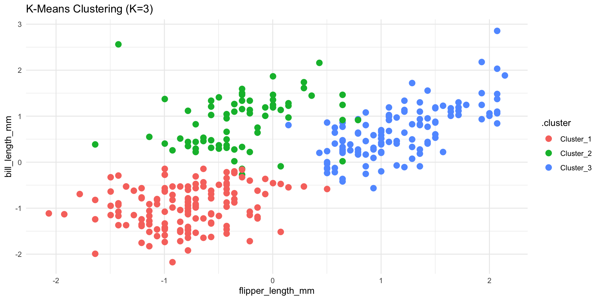

Clustering with Tidyclust
Lecture 33
Dr. Eric Friedlander
College of Idaho
CSCI 2025 - Winter 2026
Unsupervised Learning
Finding Groups
- Supervised Learning: We have a target variable (Y) to predict (Regression, Classification).
- Unsupervised Learning: No target. We want to find structure in the data.
- Clustering: Grouping similar observations together.
- Techniques:
- K-Means Clustering
- Hierarchical Clustering
The tidyclust Package
- Builds on
tidymodels. - Provides a consistent interface for clustering models.
- Workflow:
- Specification:
k_means()orhier_clust(). - Engine:
set_engine(). - Fit:
fit().
- Specification:
K-Means Clustering
Intuition
- Goal: Partition data into \(K\) clusters.
- Algorithm:
- Initialize \(K\) centroids randomly.
- Assign each point to the closest centroid.
- Update centroids (mean of assigned points).
- Repeat until convergence.
Fitting K-Means
tidyclust cluster object
K-means clustering with 3 clusters of sizes 129, 85, 119
Cluster means:
bill_length_mm bill_depth_mm flipper_length_mm body_mass_g
2 -1.0452359 0.4858944 -0.8803701 -0.7616078
3 0.6710153 0.8040534 -0.2889118 -0.3835267
1 0.6537742 -1.1010497 1.1607163 1.0995561
Clustering vector:
1 2 3 4 5 6 7 8 9 10 11 12 13 14 15 16 17 18 19 20
1 1 1 1 1 1 1 1 1 1 1 1 2 1 2 1 1 1 1 1
21 22 23 24 25 26 27 28 29 30 31 32 33 34 35 36 37 38 39 40
1 1 1 1 1 1 1 1 1 1 1 1 1 1 1 1 1 1 2 1
41 42 43 44 45 46 47 48 49 50 51 52 53 54 55 56 57 58 59 60
1 1 1 2 1 1 1 2 1 1 1 1 1 1 1 2 1 1 1 1
61 62 63 64 65 66 67 68 69 70 71 72 73 74 75 76 77 78 79 80
1 1 1 2 1 1 1 2 1 2 1 1 1 2 1 2 1 1 1 1
81 82 83 84 85 86 87 88 89 90 91 92 93 94 95 96 97 98 99 100
1 1 1 1 1 2 1 1 1 2 1 1 1 2 1 2 1 1 1 1
101 102 103 104 105 106 107 108 109 110 111 112 113 114 115 116 117 118 119 120
1 1 1 2 1 2 1 2 1 2 1 1 1 1 1 1 1 1 1 1
121 122 123 124 125 126 127 128 129 130 131 132 133 134 135 136 137 138 139 140
1 1 1 2 1 2 1 1 1 1 1 1 1 1 1 1 1 1 1 1
141 142 143 144 145 146 147 148 149 150 151 152 153 154 155 156 157 158 159 160
1 1 1 1 1 2 3 3 3 3 3 3 3 3 3 3 3 3 3 3
161 162 163 164 165 166 167 168 169 170 171 172 173 174 175 176 177 178 179 180
3 3 3 3 3 3 3 3 3 3 3 3 3 3 3 3 3 3 3 3
181 182 183 184 185 186 187 188 189 190 191 192 193 194 195 196 197 198 199 200
3 3 3 3 3 3 3 3 3 3 3 3 3 3 3 3 3 3 3 3
201 202 203 204 205 206 207 208 209 210 211 212 213 214 215 216 217 218 219 220
3 3 3 3 3 3 3 3 3 3 3 3 3 3 3 3 3 3 3 3
221 222 223 224 225 226 227 228 229 230 231 232 233 234 235 236 237 238 239 240
3 3 3 3 3 3 3 3 3 3 3 3 3 3 3 3 3 3 3 3
241 242 243 244 245 246 247 248 249 250 251 252 253 254 255 256 257 258 259 260
3 3 3 3 3 3 3 3 3 3 3 3 3 3 3 3 3 3 3 3
261 262 263 264 265 266 267 268 269 270 271 272 273 274 275 276 277 278 279 280
3 3 3 3 3 2 2 2 2 2 2 2 2 2 2 2 2 2 2 2
281 282 283 284 285 286 287 288 289 290 291 292 293 294 295 296 297 298 299 300
2 2 2 2 2 1 2 1 2 2 2 2 2 2 2 1 2 1 2 2
301 302 303 304 305 306 307 308 309 310 311 312 313 314 315 316 317 318 319 320
2 2 2 2 2 2 2 2 2 2 2 2 2 2 2 2 2 2 2 1
321 322 323 324 325 326 327 328 329 330 331 332 333
2 2 2 2 2 2 2 2 2 2 2 2 2
Within cluster sum of squares by cluster:
[1] 120.7030 109.4813 139.4684
(between_SS / total_SS = 72.2 %)
Available components:
[1] "cluster" "centers" "totss" "withinss" "tot.withinss"
[6] "betweenss" "size" "iter" "ifault" Visualizing Clusters
- We can explore the cluster assignments.
# Extract Assignments
# extract_cluster_assignment(kmeans_fit) # This extracts just the vector
# Visualize
kmeans_fit |>
extract_cluster_assignment(penguins_clean) |>
bind_cols(penguins_clean) |>
ggplot(aes(x = flipper_length_mm, y = bill_length_mm, color = .cluster)) +
geom_point(size = 3) +
labs(title = "K-Means Clustering (K=3)") +
theme_minimal()
Choosing K (Elbow Method)
- How do we know K=3 is best?
- Total Within-Cluster Sum of Squares (WSS): Measure of compactness (lower is better).
- Look for the “Elbow” in the WSS vs K plot.
Hierarchical Clustering
Intuition
- Builds a hierarchy of clusters.
- Dendrogram: Tree diagram showing relationships.
- No need to pre-specify K!
- Linkage: How to define distance between clusters (Complete, Single, Average).
Fitting Hierarchical Clustering
Visualizing Dendrograms
tidyclust(anddendextendunderneath) makes plotting easy.
(Note: Simple base R plot of the underlying hclust object is often easiest for slides)

Cutting the Tree
- We can “cut” the tree to get \(K\) clusters.
Summary
Summary
- Clustering: Finding groups without labels.
- K-Means: Partition into K groups. Good for spherical clusters.
- Hierarchical: Tree structure. Good for visualizing relationships.
- Tidyclust: Brings tidy syntax to clustering (
k_means(),hier_clust(),fit()). - Visualization:
- Scatterplots colored by Cluster.
- Dendrograms.